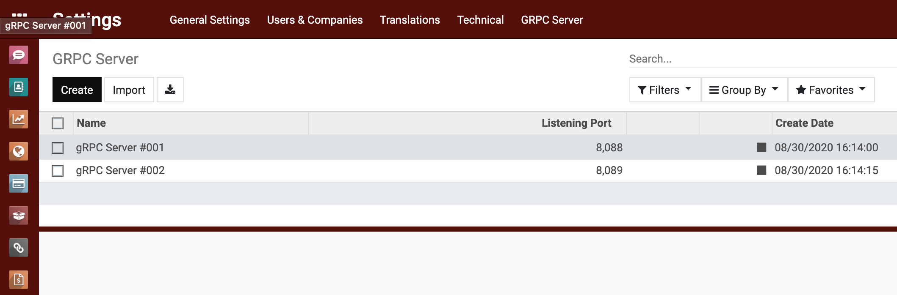

<section class="oe_container">
	<div class="oe_row oe_spaced">
		<h2 class="oe_slogan">Simple gRPC module for Odoo</h2>
		<h4 class="oe_slogan">KhangSG - odoo-vn.com</h4>
		<div class="oe_demo oe_screenshot"
			style="max-width: 84%; margin: 16px 8%;">
			
		</div>
		<div>
			USING gRPC IN ODOO <br/>

The simple guide: how to get Odoo product from nodejs using gRPC. <br/>

Python 3.7 <br/>

gRPC 1.14.0 <br/>

Required see <br/>
https://grpc.io/docs/languages/python/basics/<br/>
https://grpc.io/docs/languages/node/basics/<br/>

## Install dependencies <br/>

pip install -r requirements.txt<br/>

## Start gRPC Server<br/>

1. Go to menu: Settings/GRPC Server<br/>
2. Create new record with (service name) and (listening port)<br/>
3. Click start button<br/>


##Request product data from nodejs<br/>

1. Type command: (cd to gRPC_base\client)<br/>
2. Edit client.js file and add product_id that you want to get data (Line 11)<br/>
3. Type command: (node client.js)<br/>

		</div>
	</div>
</section>